1076A72 heat shield for right catalytic preconverter r r
- Path
- Procedures > 10 ENGINE > 1076 EXHAUST PIPES AND SILENCERS > 1076A exhaust pipe fastenings and protections > 1076A72 heat shield for right catalytic preconverter r r
- Kind
- repair procedure (removal / refitting; the operation number is the code)
- Applies to
- engines: 3.2 V6; all production periods
- Interactive page
- https://sloeber94.github.io/elrnDB-a147/en/#/3024981
Applies to: engines: 3.2 V6; all production periods
 Removing
Removing
 Refitting
RefittingPosition the vehicle on the ramp.
Make sure that the ignition key is in the OFF position. then disconnect the battery negative (-) terminal.
 | Name | Connector |
|---|---|---|
- | Battery |
1. Loosen the band (1a) and disconnect the oil vapour recirculation pipe (1b) from the corrugated hose.
2. Loosen the bands (2a) and remove the corrugated hose (2b), complete with resonator (2c).
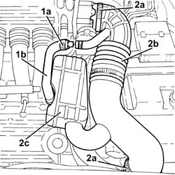
Applies to: engines: 3.2 V6; all production periods
1. Disconnect the electrical connection from the throttle body integrated with the D.V.L.
| Name | Connector |
|---|---|---|
1 | Throttle body actuator |
2. Open the electrical connections box cover.
3. Disconnect the electrical connection for the right Lambda sensor.
| Name | Connector |
|---|---|---|
3 | Lambda sensor on left pre-catalyzer |
4. Disconnect the rapid connector for the fuel vapour recirculation pipe from the air chamber.
5. Loosen the band and disconnect the brake servo vacuum intake pipe from the air chamber.
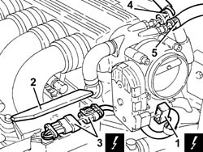
Applies to: engines: 3.2 V6; all production periods
1. Open the electrical connections box cover.
2. Disconnect the engine coupling.
3. Disconnect the electrical connections (3a) and (3b) for the rear Lambda sensors and the catalytic converter.
| Name | Connector |
|---|---|---|
3a | Lambda sensor downstream of post-catalyzer |
| Name | Connector |
|---|---|---|
3b | Lambda sensor on catalyzer -2 |
4. Disconnect the electrical connection for the detonation sensor, timing side.
| Name | Connector |
|---|---|---|
4 | Detonation sensor - 1 |
5. Release the electrical wiring for the timing side detonation sensor (5a) and the fuel supply pipe (5b) from the cable duct (5c).
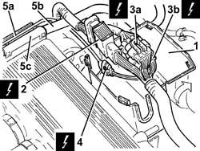
Applies to: engines: 3.2 V6; all production periods
1. Undo the bolts (1a) and remove the electrical connections box (1b).
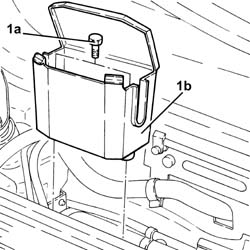
Applies to: engines: 3.2 V6; all production periods
1. Disconnect the electrical connections (1a) and (1b) from the injection/ignition system control unit.
| Name | Connector |
|---|---|---|
1a | Engine management ECU |
| Name | Connector |
|---|---|---|
1b | Engine management ECU |
2. Undo nut (2a) and disconnect earth lead (2b) from the air chamber.
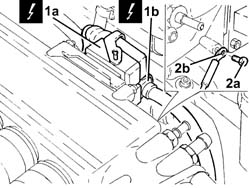
Applies to: engines: 3.2 V6; all production periods
1. Loosen the bands and disconnect the flexible pipes from the engine coolant reservoir rigid coolant return pipe.
2. Undo the bolts (2a) and remove the engine coolant reservoir rigid coolant return pipe (2b).
3. Loosen the band and disconnect the oil vapour recovery pipe from the air chamber.
4. Loosen the bands fixing the inlet ducts to the air chamber.
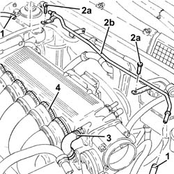
Applies to: engines: 3.2 V6; all production periods
1. Undo the bolts (1a) and remove the reinforcement (1b) between the air chamber and bracket on the engine for the reaction link.
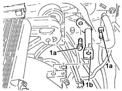
Applies to: engines: 3.2 V6; all production periods
1. Undo the bolts (1a) and remove the air chamber (1b) complete with injection/ignition system control unit (1c) and throttle body integrated with D.V.L. (1d).
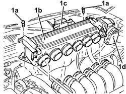
Applies to: engines: 3.2 V6; all production periods
Proceed with removal 1008C10 power unit upper reaction link r r .
Proceed with removal 7055B54 under-engine guard - r r .
Proceed with removal 1076B82 left exhasust pipe between catalytic preconverter and converter r r .
Proceed with removal 1076B84 right exhaust pipe between caralytic preconverter and converter r r .
1. Position a hydraulic jack under the power unit gearbox side front support.
2. Undo the bolts fixing the power unit gearbox side rigid support to the flexible mounting.
Slowly lower the power unit with the hydraulic jack until it is resting on the front suspension crossmember.
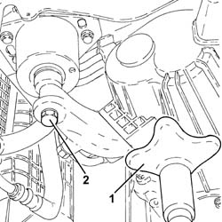
Applies to: engines: 3.2 V6; all production periods
1. Undo the upper right Lambda sensor using a suitable spanner and remove it.
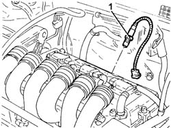
Applies to: engines: 3.2 V6; all production periods
Undo the lower nut fastening the heat shield for the right catalytic preconverter to the bracket.
1. Undo the upper nuts (1a) and remove the right catalytic preconverter heat shield (1b).
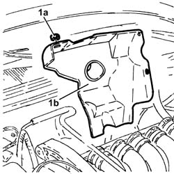
Applies to: engines: 3.2 V6; all production periods
Refitting
RemovingPlace the right catalytic preconverter heat shield back in its housing and secure it using the nuts.
1. Place the right upper Lambda sensor back in its housing and tighten it to the recommended torque.
 | Fastening | Component | Ø | Value (daNm) |
|---|---|---|---|---|
1 | - | RIGHT LAMBDA SENSOR | M18 | (Right preconverter side) 4.1 ÷ 5.0 |
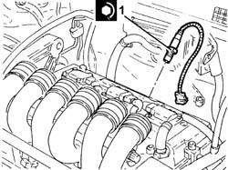
Applies to: engines: 3.2 V6; all production periods
1. Place the power unit back in its housing using a hydraulic jack positioned under the gearbox side rigid power unit support.
2. Undo the bolt fixing the gearbox side rigid power unit support to the flexbile block to the specified torque.
| Fastening | Component | Ø | Value (daNm) |
|---|---|---|---|---|
2 | - | - | - | - |
Remove the hydraulic jack.
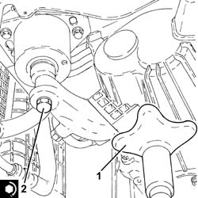
Applies to: engines: 3.2 V6; all production periods
Proceed with refitting 1076B84 right exhaust pipe between caralytic preconverter and converter r r .
Proceed with refitting 1076B82 left exhasust pipe between catalytic preconverter and converter r r .
Proceed with refitting 1008C10 power unit upper reaction link r r .
Place the air chamber complete with injection/ignition system control unit and throttle body integrated with D.V.L. back in its housing and fasten it using the bolts.
Refit in its seating the reinforcement between the air chamber and bracket on the engine for the reaction link and secure it with its bolts.
Tighten the bands fixing the inlet ducts to the air chamber.
Connect the oil vapour recovery pipe to the air chamber and tighten the band.
Place the coolant rigid return pipe to the engine cooling system reservoir back in its housing and fix it using the bolts.
Connect the flexible pipes to the coolant return pipe to the engine coolant reservoir and tighten the band.
Connect the earth lead to the air chamber and secure it using the bolts.
Connect the electrical connections to the fuel injection/ignition control unit.
Place the electrical connections box back in its housing and secure it using the bolts.
Fasten the electrical wiring for the timing side detonation sensor and the fuel supply pipe to the cable duct.
Connect the electrical connection for the detonation sensor, timing side.
Connect the electrical connections for the rear Lambda sensors to the catalytic converter.
Connect the engine junction.
Close the electrical connections box cover.
Connect the brake servo vacuum intake pipe to the air chamber and tighten the band.
Connect the rapid connector for the fuel vapour recirculation pipe to the air chamber.
Connect the electrical connection for the right Lambda sensor.
Close the electrical connections box cover.
Connect the electrical connection to the throttle body integrated with the D.V.L.
Place the corrugated hose, complete with resonator, back in its housing and tighten the bands.
Connect the oil vapour recirculation pipe to the corrugated hose and tighten the band.
Proceed with refitting 7055B54 under-engine guard - r r .
Connect the negative (-) battery terminal.
Remove the car from the ramps.
Topics linked from this page (12)
- 1008C10 power unit upper reaction link r r
- 1076B82 left exhasust pipe between catalytic preconverter and converter r r
- 1076B84 right exhaust pipe between caralytic preconverter and converter r r
- 7055B54 under-engine guard - r r
- A1B Battery ( Connectors )
- K16 Lambda sensor on left pre-catalyzer ( ENGINE )
- K17 Lambda sensor downstream of post-catalyzer
- K18 Lambda sensor on catalyzer -2
- K50 Detonation sensor - 1
- M10A Engine management ECU ( Connectors )
- M10B Engine management ECU ( ENGINE )
- N75 Throttle body actuator